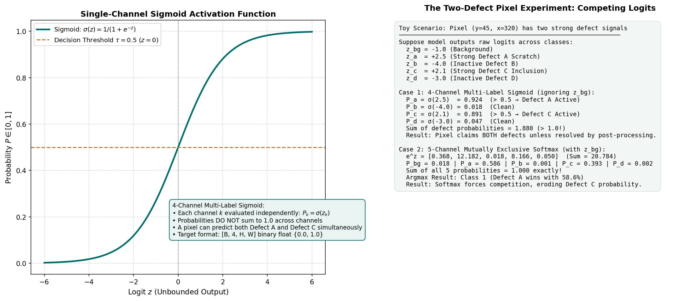
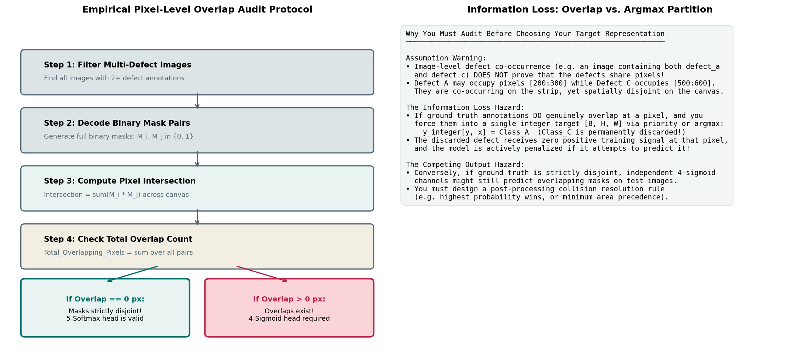

Output Heads & Target Semantics: Multi-Label Sigmoid vs. Multi-Class Softmax
In deep learning segmentation, the final layer of your network—the output head—translates high-level spatial feature maps into class predictions. While this layer is often just a simple \(1 \times 1\) convolution, your architectural choices here dictate your target representation, your activation function, your loss formulation, and your post-processing decision pipeline.
In this competition, students frequently debate two competing formulations:
- The 4-Channel Multi-Label Formulation: Four independent binary defect channels activated by Sigmoid.
- The 5-Channel Multi-Class Formulation: A background-inclusive categorical partition activated by Softmax.
Does one formulation hold a universal theoretical advantage? What happens if two defect classes occur on the same image? And how can you verify whether ground truth annotations physically overlap before committing to an architecture?
This guide examines both output heads in detail. You will trace tensor flows through both pipelines, walk through a concrete numerical demonstration of a competing-defect pixel, conduct a rigorous pixel-level mask overlap audit, analyze the risk of permanent information loss, and learn how to resolve multi-channel predictions at test time.
1. Two Competing Paradigms: Architectures and Contracts
Every output head requires strict mathematical consistency between five components: output tensor shape, activation function, target tensor encoding, loss function, and inference decision rule. Mixing components across paradigms leads to fatal training failures or silent metric degradation.

Figure 4.1: The 4-Channel Multi-Label Sigmoid head vs. the 5-Channel Multi-Class Softmax head. Sigmoid evaluates each defect channel independently, while Softmax enforces mutual exclusivity across classes.Paradigm A: The 4-Channel Multi-Label Sigmoid Head
In this formulation, the model treats each defect type as an independent binary detection task.
Paradigm A Pipeline:
Decoder Features [B, C, H, W]
│
▼
1×1 Conv Head ──► Raw Logits Z: [B, 4, 128, 800] (Unbounded in (-∞, +∞))
│
├─► Training Flow: Fed directly to nn.BCEWithLogitsLoss() against Binary Target Y: [B, 4, 128, 800]
│
└─► Inference Flow: P_k = σ(z_k) = 1 / (1 + e^(-z_k)) ──► Threshold τ ──► Binary Mask M_k ∈ {0, 1}- Output Tensor: \([B, 4, 128, 800]\) representing defect channels \([a, b, c, d]\). There is no explicit background channel; background is implicitly represented when all four channels equal 0.
- Target Tensor: \([B, 4, 128, 800]\) float32 tensor with binary values \(\{0.0, 1.0\}\).
-
Activation: Independent elementwise Sigmoid:
\[P_k(y, x) = \sigma(z_k(y, x)) = \frac{1}{1 + e^{-z_k(y, x)}} \in (0, 1)\] -
Semantics: Channels do not compete. The probability of Defect A has zero mathematical influence on the probability of Defect C.
- Inference Rule: Per-channel thresholding: \(\hat{Y}_k(y, x) = \mathbb{I}(P_k(y, x) \ge \tau_k)\).
Paradigm B: The 5-Channel Multi-Class Softmax Head
In this formulation, the model treats every pixel as belonging to exactly one mutually exclusive category.
Paradigm B Pipeline:
Decoder Features [B, C, H, W]
│
▼
1×1 Conv Head ──► Raw Logits Z: [B, 5, 128, 800] (Unbounded in (-∞, +∞))
│ (Class 0: Background, Classes 1..4: Defects A, B, C, D)
│
├─► Training Flow: Fed to nn.CrossEntropyLoss() against Integer Target Y: [B, 128, 800] ∈ {0, 1, 2, 3, 4}
│
└─► Inference Flow: P_k = e^(z_k) / Σ_j e^(z_j) ──► Argmax / Score Filter ──► Categorical Map- Output Tensor: \([B, 5, 128, 800]\). An explicit Channel 0 represents Background (clean steel), while Channels 1 through 4 represent defects \([a, b, c, d]\).
- Target Tensor: \([B, 128, 800]\) int64 tensor where each pixel contains a single class index: \(\{0, 1, 2, 3, 4\}\).
-
Activation: Channel-wise Softmax:
\[P_k(y, x) = \frac{e^{z_k(y, x)}}{\sum_{j=0}^{4} e^{z_j(y, x)}}, \quad \text{such that } \sum_{k=0}^{4} P_k(y, x) = 1.0\] -
Semantics: Channels compete directly. If logit \(z_a\) rises, it directly forces down the probabilities \(P_{\text{bg}}\) and \(P_c\).
-
Inference Rule: Pixel-wise argmax or background-gated thresholding:
\[\hat{C}(y, x) = \arg\max_{k \in \{0..4\}} P_k(y, x)\]
2. The Synthetic Two-Defect Pixel Experiment
To see the practical consequence of this choice, let us trace a single fictional pixel \([y=45, x=320]\) where the neural network detects strong visual evidence for both Defect A (a scratch) and Defect C (an inclusion).
Suppose the network's final layer outputs the following raw unbounded logits across all five potential categories:
Case 1: Interpreting Under 4-Channel Multi-Label Sigmoid
Under the multi-label paradigm, we ignore \(z_{\text{bg}}\) and compute independent probabilities for the four defect classes:
Mathematical Observations:
-
Sum of Probabilities:
\[\sum_{k=a}^d P_k = 0.9241 + 0.0180 + 0.8909 + 0.0474 = \mathbf{1.8804} \quad (\gg 1.0!)\]Sigmoid probabilities do not sum to 1.0. Each channel operates as an independent Bernoulli probability trial.
-
Decision Outcome: If we apply a standard decision threshold \(\tau = 0.5\):
- Defect A is ACTIVE (\(0.9241 \ge 0.5\)).
- Defect C is ACTIVE (\(0.8909 \ge 0.5\)).
- The model predicts that this single pixel simultaneously contains both a scratch and an inclusion!
Case 2: Interpreting Under 5-Channel Multi-Class Softmax
Now let us interpret the exact same logits using the categorical Softmax formulation (including \(z_{\text{bg}} = -1.0\)):
-
Compute exponents \(e^{z_j}\):
\[e^{-1.0} \approx 0.3679, \quad e^{2.5} \approx 12.1825, \quad e^{-4.0} \approx 0.0183, \quad e^{2.1} \approx 8.1662, \quad e^{-3.0} \approx 0.0498\] -
Sum of exponents:
\[\sum_{j=0}^{4} e^{z_j} = 0.3679 + 12.1825 + 0.0183 + 8.1662 + 0.0498 = \mathbf{20.7847}\] -
Compute normalized probabilities \(P_k = e^{z_k} / \sum e^z\):
\[P_{\text{bg}} = \frac{0.3679}{20.7847} \approx \mathbf{0.0177} \quad (1.8\%)\]\[P_a = \frac{12.1825}{20.7847} \approx \mathbf{0.5861} \quad (58.6\%)\]\[P_b = \frac{0.0183}{20.7847} \approx \mathbf{0.0009} \quad (0.1\%)\]\[P_c = \frac{8.1662}{20.7847} \approx \mathbf{0.3929} \quad (39.3\%)\]\[P_d = \frac{0.0498}{20.7847} \approx \mathbf{0.0024} \quad (0.2\%)\]
Mathematical Observations:
-
Sum of Probabilities:
\[\sum_{k=0}^{4} P_k = 0.0177 + 0.5861 + 0.0009 + 0.3929 + 0.0024 \equiv \mathbf{1.0000} \quad (\text{Exactly } 1.0)\] -
The Suppression Effect (Cross-Channel Competition): Notice what happened to Defect C: under Sigmoid, its confidence was \(89.1\%\). But under Softmax, because it had to compete against Defect A's slightly stronger logit (\(2.5 > 2.1\)), Defect C was suppressed down to \(39.3\%\)!
-
Decision Outcome: If applying argmax:
\[\hat{C} = \arg\max \{0.018, 0.586, 0.001, 0.393, 0.002\} = \mathbf{\text{Class 1 (Defect A)}}\]Defect A claims the pixel exclusively. Defect C is completely zeroed out.
Why Neither Activation Proves Accuracy or Calibration
Students often believe that Softmax probabilities are "more reliable" because they sum to 1.0, or that Sigmoid is "more honest" because channels do not compete.
Both beliefs are incorrect:
- Softmax outputs are notoriously overconfident: even when an input is out-of-distribution or noisy, the exponentiation forces probabilities to sum to 1.0, often assigning \(99\%\) probability to an incorrect class simply because one logit happened to be slightly less negative than the others.
- Sigmoid outputs can be severely uncalibrated: a model can predict \(P=0.85\) on hundreds of false-alarm background speckles if class imbalance is not properly compensated in the loss.
- Calibration is a property of the model's training dynamics and loss function, not the activation function.
3. Co-occurrence vs. Overlap: The Mask Audit Protocol
A dangerous trap in exploratory data analysis is assuming that image-level co-occurrence implies pixel-level overlap:
WARNING: Just because an image contains annotations for both
defect_aanddefect_cintrain.csvdoes NOT mean they share a single physical pixel!
Consider an industrial steel strip:
- A mechanical scratch (
defect_a) may run along the top edge of the sheet from \(x=100\) to \(x=300\), \(y=10\text{--}15\). - A chemical inclusion cluster (
defect_c) may sit near the bottom edge from \(x=600\) to \(x=700\), \(y=90\text{--}110\). - Both defects exist on the same strip, but their masks are \(100\%\) spatially disjoint (they share zero pixels).

Figure 4.2: The empirical mask overlap audit flowchart. You must audit your own training dataset to verify whether ground truth masks physically intersect before choosing a target representation.How to Audit Your Own Annotations
Before choosing between a 4-channel multi-label head and a 5-channel softmax head, you must execute an empirical pixel-level overlap audit on your dataset.
Here is the exact mathematical audit procedure:
- Identify all training images that contain two or more active defect annotations (\(N_{\text{defects}} \ge 2\)).
-
For each multi-defect image, decode the RLE strings into separate binary masks:
\[M_a, M_b, M_c, M_d \in \{0, 1\}^{128 \times 800}\] -
For every unique pair of classes \((i, j)\) where \(i \ne j\), compute the pixel-wise intersection:
\[\text{Intersection}(i, j) = \sum_{y=1}^{128} \sum_{x=1}^{800} \left( M_i(y, x) \cdot M_j(y, x) \right)\] -
Sum the intersections across your entire training dataset.
# Educational Audit Snippet: How to verify mask overlap yourself
def audit_mask_overlap(dataset):
total_multi_label_images = 0
total_overlapping_pixels = 0
pairwise_overlaps = {}
for sample in dataset:
masks = sample["mask"] # Tensor shape: [4, 128, 800]
active_channels = (masks.sum(dim=(1, 2)) > 0).nonzero().flatten().tolist()
if len(active_channels) >= 2:
total_multi_label_images += 1
# Check pairwise intersection
for i in range(len(active_channels)):
for j in range(i + 1, len(active_channels)):
c1, c2 = active_channels[i], active_channels[j]
intersection = (masks[c1] * masks[c2]).sum().item()
pair_key = f"{c1}_vs_{c2}"
pairwise_overlaps[pair_key] = pairwise_overlaps.get(pair_key, 0) + intersection
total_overlapping_pixels += intersection
print(f"Audit Summary:")
print(f" • Multi-defect images audited: {total_multi_label_images}")
print(f" • Total overlapping pixels found: {total_overlapping_pixels}")
return pairwise_overlaps4. The Information Loss Hazard: Forcing Overlaps into Integers
What happens if you skip this audit and blindly convert multi-label masks into a single categorical integer target [B, 128, 800]?
Suppose two defects genuinely overlap at pixel \((y, x)\), such that:
To feed this into nn.CrossEntropyLoss(), you must map each pixel to a single integer class index \(Y \in \{0, 1, 2, 3, 4\}\).
If you use argmax or priority ordering (e.g., assigning the pixel to Class 1):
The Permanent Information Loss:
- Defect C is Completely Erased: The ground truth that Defect C exists at \((y, x)\) is permanently deleted from the target tensor.
- Contradictory Gradient Penalty: When the model forward pass runs, if the network correctly detects visual features of Defect C and outputs a high logit \(z_c\),
CrossEntropyLosswill actively penalize the model for being right! The loss will backpropagate negative gradients into the Defect C channels because the integer target says the pixel is only Defect A. - Metric Degradation: At evaluation time, your ground truth evaluation mask still contains Defect C. The model, having been trained never to predict Defect C at that location, will suffer false negatives.
Core Principle:
- If the audit reveals overlapping pixels: You must use the 4-channel multi-label Sigmoid formulation to preserve full ground truth fidelity.
- If the audit reveals zero overlapping pixels: Then the ground truth forms a strict physical partition. In that case, both 4-Sigmoid and 5-Softmax are mathematically valid, and you should compare them empirically on your validation set.
5. The Competing Output Hazard in Independent Heads
Suppose your audit shows that ground truth masks are \(100\%\) disjoint, and you choose to train with a 4-channel independent Sigmoid head.
Are you completely safe? No!
Because the four channels are trained independently, the model has no architectural constraint preventing it from predicting multiple defects at the same pixel during test inference:
- At training time, the loss separately encourages Channel A and Channel C to match their respective targets.
- At test time, an ambiguous defect (such as an inclusion surrounded by scratch marks) might produce \(P_a = 0.72\) and \(P_c = 0.68\).
- Both probabilities exceed the threshold \(\tau = 0.5\).
The Kaggle Submission & Evaluation Hazard
If the competition evaluation metric assumes that masks are mutually exclusive, or if multi-class collisions are heavily penalized by false positive metrics, predicting two overlapping defect masks on the same pixel damages your score.
Collision Resolution Strategies for Sigmoid Heads
If you use independent sigmoid channels, you must implement an explicit post-processing collision resolution rule:
-
Highest Probability Wins (Argmax over Active Channels): If a pixel has \(P_a \ge \tau\) and \(P_c \ge \tau\), assign the pixel exclusively to whichever class has the higher probability (\(\max(P_a, P_c)\)) and zero out the other channel.
-
Area-Based Precedence: Assign the pixel to the defect class with the smaller overall component area (since small rare defects like
defect_bare more vulnerable to recall penalties).
6. Comparative Decision Matrix
| Dimension | 4-Channel Multi-Label Sigmoid | 5-Channel Multi-Class Softmax |
|---|---|---|
| Output Logits | \([B, 4, 128, 800]\) | \([B, 5, 128, 800]\) (includes background) |
| Target Tensor | \([B, 4, 128, 800]\) float32 binary | \([B, 128, 800]\) int64 categorical |
| Mathematical Assumption | Channels are independent. | Classes are strictly mutually exclusive. |
| Ground Truth Overlap Safe? | Yes: Preserves overlapping labels losslessly. | No: Causes permanent ground truth information loss. |
| Test-Time Collision Risk | Yes: Can predict overlapping masks unless resolved. | Zero: Softmax guarantees mutually exclusive output. |
| Empty Clean Image Handling | Implicit: all 4 channels \(< \tau\). | Explicit: Channel 0 (\(P_{\text{bg}}\)) exceeds defect channels. |
| Loss Compatibility | BCEWithLogitsLoss + Soft Dice. |
CrossEntropyLoss + Multiclass Dice. |
7. Common Implementation Pitfalls and Diagnostics
| Bug / Pitfall | Root Cause | Observable Symptom | Diagnostic & Fix |
|---|---|---|---|
| Missing Background Channel in Softmax | Outputting 4 channels with CrossEntropyLoss without a background class. |
Network is forced to assign every clean background pixel to one of the 4 defects! Loss explodes. | Softmax heads must output 5 channels (\(C_0 = \text{background}\)). |
| Double Activation Bug | Calling torch.sigmoid(logits) before passing to nn.BCEWithLogitsLoss(). |
Loss plateaus near \(\approx 0.693\); gradients vanish. | Pass raw unbounded logits directly to BCEWithLogitsLoss. |
| Target Type Error in CrossEntropy | Passing float targets [B, 5, H, W] to nn.CrossEntropyLoss(). |
RuntimeError: Expected floating point target with same shape, or int64 target. |
Pass [B, H, W] with dtype=torch.long (int64) containing class indices. |
| Silent Overlap Erasure | Converting multi-label masks to integers using torch.argmax() without checking for ties or overlaps. |
Certain defect classes lose up to \(20\%\) of their positive training pixels. | Run the overlap audit (Section 3) before creating integer targets. |
8. Ungraded Try-It Activity: Trace a Multi-Channel Collision
Try this small calculation on paper:
Suppose a pixel outputs the following 5 logits:
- Calculate the Sigmoid probability for Defect A (\(z_a = 1.8\)) and Defect C (\(z_c = 1.2\)).
- Using threshold \(\tau = 0.5\), which defects are active under the Sigmoid head?
- Calculate the Softmax probabilities for all 5 classes. Which class wins the argmax?
- What happened to Defect C's decision between the two heads?
Click here to view the worked solution
- Sigmoid probabilities:
- \(P_a = \sigma(1.8) = \frac{1}{1 + e^{-1.8}} \approx \frac{1}{1 + 0.1653} \approx \mathbf{0.858}\)
- \(P_c = \sigma(1.2) = \frac{1}{1 + e^{-1.2}} \approx \frac{1}{1 + 0.3012} \approx \mathbf{0.768}\)
- Sigmoid decision (\(\tau = 0.5\)):
- Both \(P_a \ge 0.5\) and \(P_c \ge 0.5\).
- Both Defect A and Defect C are active!
- Softmax probabilities:
- Exponents: \(e^{0.5} \approx 1.649\), \(e^{1.8} \approx 6.050\), \(e^{-2.0} \approx 0.135\), \(e^{1.2} \approx 3.320\), \(e^{-1.5} \approx 0.223\).
- Sum of exponents: \(1.649 + 6.050 + 0.135 + 3.320 + 0.223 = \mathbf{11.377}\).
- \(P_{\text{bg}} = 1.649 / 11.377 \approx \mathbf{0.145}\)
- \(P_a = 6.050 / 11.377 \approx \mathbf{0.532}\)
- \(P_b = 0.135 / 11.377 \approx \mathbf{0.012}\)
- \(P_c = 3.320 / 11.377 \approx \mathbf{0.292}\)
- \(P_d = 0.223 / 11.377 \approx \mathbf{0.020}\)
- Argmax Winner: Class 1 (Defect A) with \(53.2\%\).
- Comparison: Under Sigmoid, Defect C was confidently predicted as present (\(76.8\%\)). Under Softmax, Defect C was suppressed (\(29.2\%\)) and completely discarded by argmax!
To run this experiment interactively on synthetic tensors with PyTorch, run:
👉 docs/milestone_3_student_guide/examples/toy_head_comparison.py
9. Primary Sources & Further Reading
- PyTorch Documentation:
torch.nn.BCEWithLogitsLoss. Mathematical formulation, log-sum-exp stabilization, and positive weighting. PyTorch Docs. - PyTorch Documentation:
torch.nn.CrossEntropyLoss. Multi-class categorical cross-entropy and class-weighting mechanics. PyTorch Docs. - Goodfellow, I., Bengio, Y., & Courville, A. (2016). Deep Learning (Chapter 6: Deep Feedforward Networks). MIT Press. Explains cross-entropy, softmax saturation, and log-likelihood optimization.